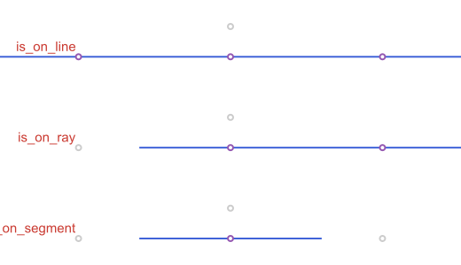
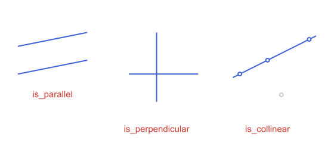
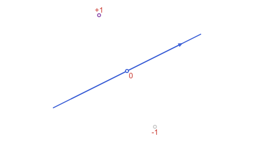
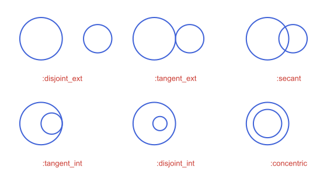
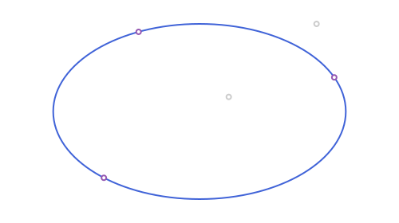
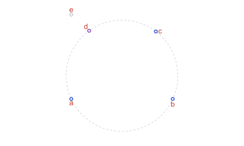
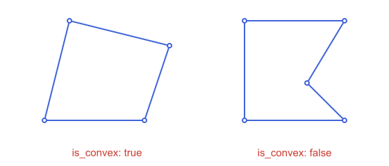

Predicates
A predicate answers a yes/no question about a construction: is this point on that line, are these lines parallel, do these four points lie on a circle. Every predicate here returns a Bool, except the two that name a position (circles_position and line_circle_position), which return a Symbol, and side_of_line, which returns -1, 0 or 1.
| Question | Predicates |
|---|---|
| Is a point on an object? | on_line, on_ray, on_segment, is_on_ellipse, is_on_hyperbola, is_on_parabola, in |
| How do two lines relate? | is_parallel, is_perpendicular |
| Do points line up, or lie on a circle? | is_collinear, is_concyclic, is_degenerate, is_cyclic |
| Which side of a line? | side_of_line |
| How do a circle and a line, or two circles, meet? | line_circle_position, circles_position |
| Shape of a polygon, point inside one | is_convex, point_in_polygon |
| Orientation of an angle | is_direct |
using ApolloniusTolerance
Coordinates are floating-point numbers, so two constructions of the same point can differ in the last digit, and a test with == would say no. Every predicate that compares positions takes atol (default 1e-9) and answers yes when the difference is below it.
A, B = APPoint(0.0, 0.0), APPoint(3.0, 1.0)
l = APLine(A, B)
p = APPoint(6.0, 2.0 + 1e-12) # 1e-12 above the line
APPoint(6.0, 2.0) == p, on_line(p, l)(false, true)atol is not an absolute distance in every predicate. is_collinear, is_parallel and is_perpendicular compare a cross or dot product with atol times the product of the lengths, so they do not depend on the size of the figure. on_line and the position predicates compare a distance with sqrt(atol), scaled by the radius where there is one, so a point at distance 1e-6 from a line is still on it. Pass a smaller atol when you need a stricter test.
Points on lines, rays and segments
on_line, on_ray and on_segment differ only in how far the object reaches: the whole line, from an origin onwards, or between two endpoints (both included). in is the same test written the other way round.
O = APPoint(0.0, 0.0)
line = APLine(O, APPoint(1.0, 0.0))
ray = APRay(O, APPoint(1.0, 0.0))
seg = APSegment(O, APPoint(6.0, 0.0))
q = APPoint(8.0, 0.0)
on_line(q, line), on_ray(q, ray), on_segment(q, seg)(true, true, false)
Each predicate has a one-argument form that returns a function of the point, ready for filter:
pts = [APPoint(x, 0.0) for x in (-2.0, 3.0, 8.0)]
filter(on_segment(seg), pts), filter(on_ray(ray), pts)(APPoint{2, Float64}[[3.0, 0.0]], APPoint{2, Float64}[[3.0, 0.0], [8.0, 0.0]])Parallel and perpendicular
is_parallel and is_perpendicular accept lines, rays and segments in any mix, and look only at the directions. Two segments that do not touch can still be parallel. is_collinear takes three points.
s1 = APSegment(APPoint(0.0, 0.0), APPoint(5.0, 1.0))
s2 = APSegment(APPoint(0.0, 2.0), APPoint(5.0, 3.0))
s3 = APSegment(APPoint(8.0, 0.0), APPoint(13.0, 0.0))
s4 = APSegment(APPoint(10.0, -2.0), APPoint(10.0, 3.0))
is_parallel(s1, s2), is_perpendicular(s3, s4), is_collinear(APPoint(0.0, 0.0), APPoint(2.0, 1.0), APPoint(4.0, 2.0))(true, true, true)
Which side of a line
side_of_line is 1 on the left of the line as it is oriented from its first point to its second, -1 on the right and 0 on the line. It is exact: it does not use atol, so a point that is on the line up to rounding can return 1 or -1. Use on_line first when that matters.
l = APLine(APPoint(0.0, 0.0), APPoint(4.0, 2.0))
side_of_line(APPoint(1.0, 3.0), l), side_of_line(APPoint(3.0, -1.0), l), side_of_line(APPoint(2.0, 1.0), l)(1, -1, 0)
Position of a circle
circles_position and line_circle_position do not answer yes or no: they name how the two objects meet, with a Symbol.
c1 = APCircle2(APPoint(0.0, 0.0), 1.5)
c2 = APCircle2(APPoint(2.5, 0.0), 1.0)
circles_position(c1, c2), line_circle_position(APLine(APPoint(0.0, 1.5), APPoint(1.0, 1.5)), c1)(:tangent_ext, :tangent)circles_position | Meaning |
|---|---|
:disjoint_ext | apart, neither inside the other |
:tangent_ext | touching from outside, one point |
:secant | crossing, two points |
:tangent_int | touching from inside, one point |
:disjoint_int | one strictly inside the other |
:concentric | same center, different radius |
:identical | same center and radius |
line_circle_position returns :disjoint, :tangent or :secant. The figures for both are in Circles.

Points on conics
is_on_ellipse, is_on_hyperbola and is_on_parabola test whether a point lies on the curve itself, not inside it. For the inside of an ellipse or a circle, use in.
e = APEllipse2(APPoint(0.0, 0.0), 5.0, 3.0)
is_on_ellipse(point_on_ellipse(e, 1.0), e), is_on_ellipse(APPoint(1.0, 0.5), e), APPoint(1.0, 0.5) in e(true, false, true)
Points that lie on a circle
is_concyclic tells whether four points lie on one circle. It also answers yes when the four are collinear, which is the limit of a circle of infinite radius. is_degenerate tells whether a triangle has zero area, that is, its three vertices are collinear, and is_cyclic is is_concyclic for the four vertices of a quadrilateral.
a, b, c = APPoint(0.0, 0.0), APPoint(6.0, 0.0), APPoint(5.0, 4.0)
d = point_on_circle(circumcircle(APTriangle(a, b, c)), 2.2)
is_concyclic(a, b, c, d), is_concyclic(a, b, c, APPoint(0.0, 5.0)), is_degenerate(APTriangle(a, b, APPoint(3.0, 0.0)))(true, false, true)
Polygons
is_convex is true when no interior angle exceeds a straight angle, and point_in_polygon says whether a point is strictly inside. The latter is what in calls for a polygon. See Polygons & Bounding Boxes for the rules at the boundary.
convex = APStraightNgon([APPoint(0.0, 0.0), APPoint(4.0, 0.0), APPoint(5.0, 3.0), APPoint(1.0, 4.0)])
concave = APStraightNgon([APPoint(8.0, 0.0), APPoint(12.0, 0.0), APPoint(10.5, 1.5), APPoint(12.0, 4.0), APPoint(8.0, 4.0)])
is_convex(convex), is_convex(concave), point_in_polygon(APPoint(2.0, 2.0), convex)(true, false, true)
Unbounded regions and angles
in also works for the regions of Unbounded Regions: Half-Planes, Strips & Angles: an angle, a half-plane and a strip. is_direct says whether an APAngle2 turns counterclockwise, that is, its measure is positive.
ang = APAngle2(APPoint(0.0, 0.0), APPoint(4.0, 0.0), APPoint(0.0, 4.0))
APPoint(1.0, 1.0) in ang, APPoint(-1.0, -1.0) in ang, is_direct(ang)(true, false, true)